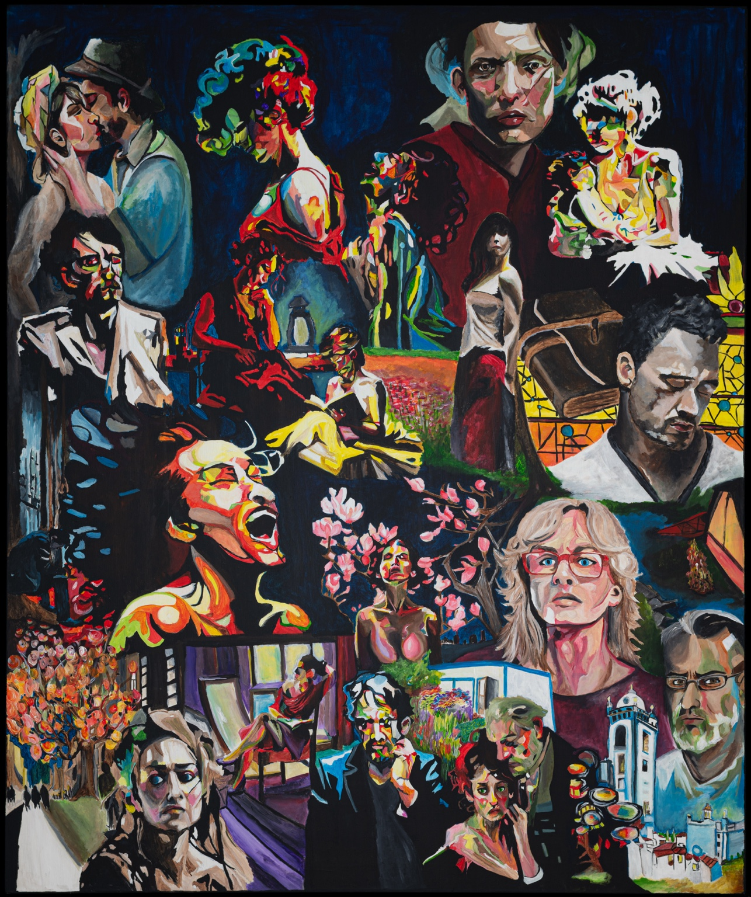

The Invisibility Project.
Making space for the stories of parents who have lost a child.
We Are the Story.
Created by Leigh Witherell during an artist residency in Portugal.

This artwork is not for sale.
To be seen.
To be remembered.
The Invisibility Project brings attention to an experience too often left unspoken: the grief of parents whose children have died, and the feeling of becoming invisible in that grief.
Leigh listened to parents share their experiences of loss and remembrance. Their voices informed We Are the Story, a collective portrait shaped by many individual stories.
Created during an artist residency in Portugal, the painting invites viewers to look closely, to acknowledge grief without turning away, and to remember the lives behind the stories.
The project in words.
Read more about the project, the interviews, and Leigh’s artistic process in Artist Talk Magazine.
Read the articleThe story continues.
The Invisibility Project is ongoing. Information about future work and ways to support the project will be shared here as details become available.